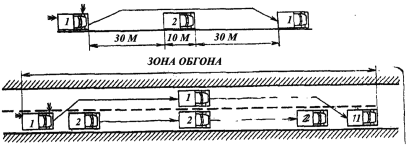

Обгон. Встречный разъезд.
Обгон считается самым сложным и опасным маневром на дороге. Неумелым его выполнением водители часто увеличивают для себя риск аварии в несколько раз. Особенно опасен обгон на дорогах с небольшой шириной проезжей части, потому что для его выполнения необходимо выехать на встречную полосу, что может помешать встречному движению. Не следует совершать обгон при малой разнице в скоростях (менее 15 км/ч), так как маневр может затянуться и будет препятствовать движению.
Безопасный обгон требует от водителя хорошего глазомера, умелого расчета и строгого выполнения правил. Перед обгоном нужно проанализировать дорожную обстановку, понять, почему водитель переднего автомобиля замедлил движение, убедиться, что впереди на полосе движения достаточно места и обгон не создаст помех для других машин.
Чтобы не попасть в аварийную ситуацию совершать обгон нужно следующим образом: перед началом обгона (рис. 21) следует убедиться в хорошей видимости дороги в пределах всей зоны обгона, в том, что ни один из следующих сзади водителей, которому может быть создана помеха, не начал обгон, а водитель автомобиля, движущегося впереди по той же полосе, не подал сигнал о повороте налево; дождаться, когда впереди появится протяженный прямолинейный участок дороги без встречного транспорта; затем включить левый указатель поворота, а в темное время суток, при отсутствии встречного движения, просигнализировать переключением света фар; начать разгон по своей полосе, сокращая дистанцию; если к моменту, когда до идущей впереди машины остаются считанные метры, на встречной полосе не появился транспорт, нужно энергично принять влево и, имея изначальное превышение скорости более 15 км/ч, быстро обойти автомобиль; перед завершением обгона включить правый указатель поворота и занять свою полосу, не создавая при этом помех встречным и попутным транспортным средствам.

Рис. 21. Схема обгона: 1 – обгоняющий автомобиль; 2 – обгоняемый
Если ширина или состояние проезжей части дороги не позволяет сделать обгон тихоходного, крупногабаритного транспортного средства, то водителю этой машины следует принять как можно правее или остановиться и пропустить автомобиль, который движется сзади с большей скоростью.
Водителю обгоняемого автомобиля запрещается препятствовать обгону повышением скорости движения, различными движениями посредине дороги или иными действиями.
Обгон не следует производить, если вблизи находятся пешеходы, идущие в попутном направлении. Обгон запрещен в конце подъема, на крутых поворотах и других участках дорог с ограниченной видимостью, на железнодорожных переездах и ближе чем за 100 м перед ним, а также на перекрестках, за исключением тех случаев, когда обгон совершается на дороге, которая является главной по отношению к пересекаемой.
Если водитель начал выезжать на полосу встречного движения для обгона или уже совершает обгон, но не успевает закончить его, так как навстречу движется машина и возникает угроза столкновения, нужно замедлить движение, приняв вправо, и прекратить обгон.
Встречный разъезд также имеет некоторые особенности. При нем водитель должен перестроиться вправо настолько, насколько это позволяет ширина проезжей части, наличие других участников движения. Если встречный разъезд затруднен, водитель, на стороне которого имеется препятствие, должен уступить дорогу. На уклонах, обозначенных соответствующими знаками, при наличии препятствия уступает дорогу водитель автомобиля, который движется на спуск. Останавливаться или съезжать на обочину должны также автомобили с грузом более 2 м по ширине и 7 м по длине (легковые автомобили с прицепом), при недостаточной ширине проезжей части дороги.